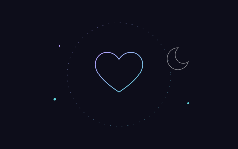

Trabajo de Informática
Artículos
Un espacio de confianza
para crecer
Recursos
Últimos artículos publicados
Proyecto
Proyecto de Informática
Profesora: Dra. Roraxy Fonseca
Trabajo de tesis
Uso de la realidad virtual como analgésico
Cátedra de Informática · Dra. Roraxy Fonseca

Informe final
Estrategias de control parental en la era digital
Cátedra de Informática · Dra. Roraxy Fonseca